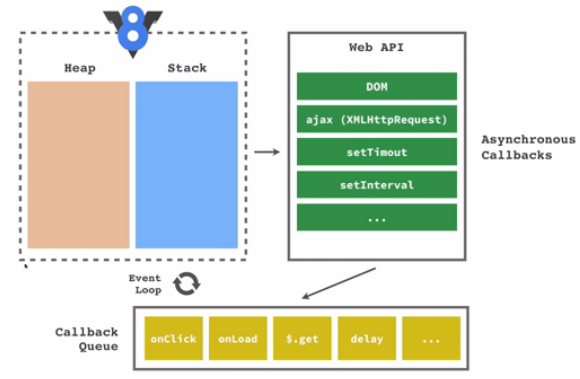

Js adalah a single-thread, non-blocking, asynchronous and cocurrent language
Single thread intinya sistemnya jika ada task 1 maka nanti diselesaikan dulu baru, jika ada task 2 maka nanti eksekusi setelah task 1 selesai. Baris perbaris baru diselesaikan utk baris berikutnya.
Thread adalah urutan eksekusi kode yg dapat dilakukan secara bebas/independent satu sama lain.
Multi thread task bisa di kerjakan bersama2 secara paralel dengan thread yg berbeda.
Blocking
jika ada loading di task 1 utk penyelesaian task maka harus menunggu utk task berikutnya. jika udh selesai maka lanjut ke task berikutnya.
Non Blocking
Kita bisa melanjutkan ke task berikutnya tanpa harus menunggu task 1 selesai.
asynchronous (single threaded) disebut juga concurrency => saat mulai task 1 maka bisa langsung eksekusi task 2 artinya bisa multi-tasking, dan akhirnya task yg 1 selesai dan task 2 selesai.
asynchronous (multi threaded) disebut parallel => jika ada multi thread misalnya dengan beberapa task bisa dilakukan bareng2
Single vs multi thread
ketika berbicara ttg diatas maka ada hubungan Lingkungan eksekusi 'task'. dikerjakan dengan 1 thread atau bnyak thread.
Blocking and non blocking
Teknik mengoding kita yg biasanya ada hubungannya dengan input dan output (IO Related), jadi ketika tombol di klik, ketika mengetik sesuatu.
Synchronous vs Asynchronous
Teknik ngoding yg ada hubungannya dengan request kita terhadap HTTP (HTTP Request Related).
Concurrent vs Parallel
Ada hubungan dengan lingkungan eksekusi 'task', Infrastructure, hardware, virtualisasi.
didlm js ada v8 engine (mesin yg menjalankan js)
v8 engine contain heap (memory alocation = variable, hoisting dll) dan stack (function call execution Context) jadi ketika function di panggil nanti di taru di heap kemudian ingin dicetak dilayar akan di taruh di stack.
dibawah ini ada yg dieksekusi di stack. setelah di eksekusi nanti perintah tsb hilang dari js dan melanjutkan ke baris berikutnya.
console.log('satu');
console.log('dua');
console.log('tiga');
http://latentflip.com/loupe/
by Philip Roberts : https://youtube.com/watch?v=8aGhZQkoFbQ
Perintah SetTimeout itu g hilang dari stack v8engine tetapi dipindahkan ke dlm WEB API. Jadi web API ini menangani callback Asynchronous seperti DOM, SetInterval,setTimeout, ajax(XMLHttpRequest) yg bukan merupakan dari V8Engine. Misal event listener : tombol diklik, mouse digerakkan itu digerakkan oleh web API.
Tapi web API tidak bisa langsung menjalankan kembali fungsinya kedlm stack. Callback nya harus disimpan dulu, kesebuah tempat namnya callback queue (untk menyimpan antrian dari callbacknya). jadi ketika tombol diklik waktu sudah selesai, interval sudah masuk maka ketika masuk ke callback queue. maka ada sesuatu yg namanya EVENT LOOP, tugasnya ngecek di event loop ada antrian g. Klo ada, ambil callbacknya simpan didlm stack. Jka sudah distack maka dijalankan diseperti biasanya.
Tapi Syaratnya kapan sebuah callback masuk kedlm stack, ketika di stacknya sudah tidak ada tumpukan perintah. jadi harus kosong dulu baru event loopnya masukkin ke event loopnya kedlm stack.